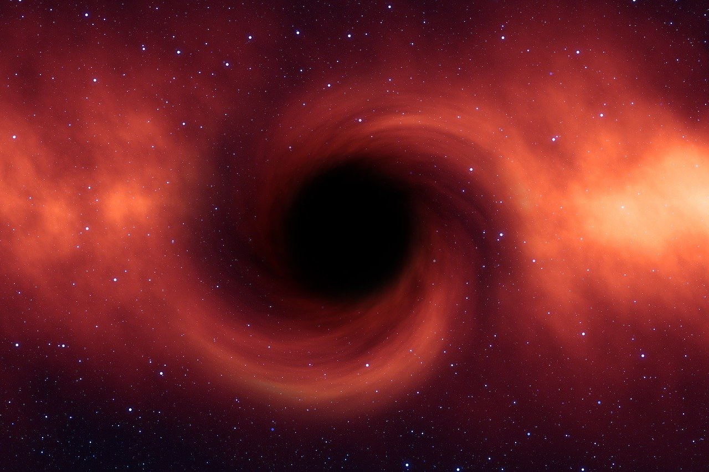
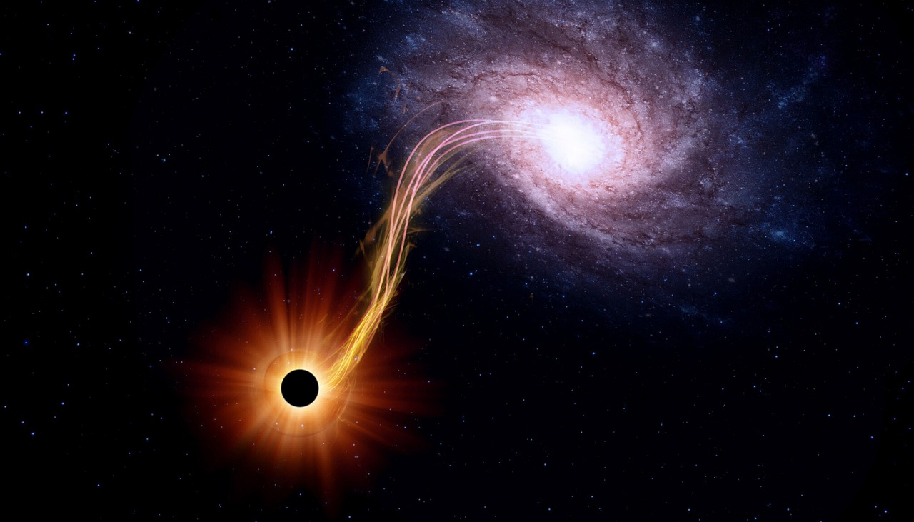

Horizonte de Eventos
A fronteira que marca o ponto a partir do qual nada consegue escapar da atração gravitacional do buraco negro.
Buracos negros são regiões do espaço onde a gravidade é tão intensa que, após determinado limite, nem mesmo a luz consegue escapar.
Os buracos negros representam alguns dos ambientes mais extremos conhecidos no universo. Eles podem se formar a partir do colapso de estrelas massivas e também existir em escalas gigantescas no centro de galáxias.
Abaixo estão três elementos associados a esses objetos. Clique nas imagens para ampliar e visualizar mais informações.
A fronteira que marca o ponto a partir do qual nada consegue escapar da atração gravitacional do buraco negro.

Gás, poeira e outros materiais podem formar estruturas brilhantes enquanto orbitam o buraco negro.

Fluxos extremamente energéticos de partículas podem ser observados em alguns sistemas associados a buracos negros.
Apesar do nome, um buraco negro pode estar cercado por regiões muito brilhantes. A matéria ao redor pode liberar grandes quantidades de energia antes de atravessar o horizonte de eventos.